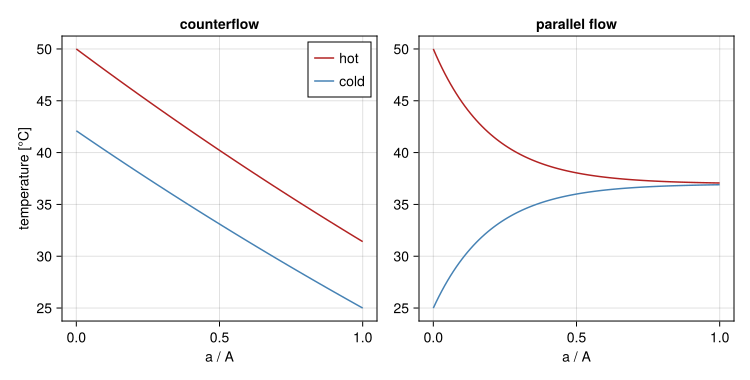
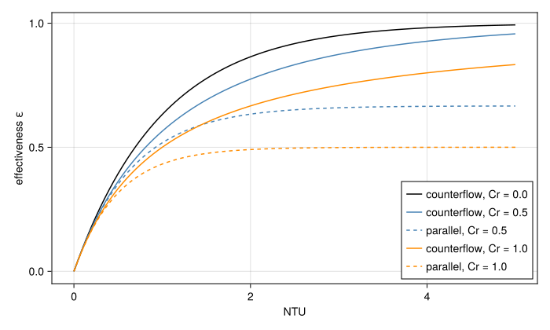

Heat exchangers and the heat sink
A reactor's heat ends up somewhere outside the model: a cooling tower, a river, the air. The HeatExchanger is where a loop hands it over, and the form chosen decides whether that sink can run out. This page gives the physics of the three forms and the reasons for the model behind them. The loss of heat sink tutorial builds a plant with them.
The ideal exchanger
HeatExchanger(T) sends liquid out at T whatever arrives, in either flow direction. It is a temperature boundary, not a model of an exchanger: it takes away whatever heat the loop brings, at any flow, so the plant's heat sink is unbounded. That is what most models want, a loop whose temperature is anchored while something else is studied, and it is why HeatExchanger(T) appears in nearly every example. It is also what makes a loss of heat sink impossible to model with it.
Capacity rates and the effectiveness
A stream's capacity rate is the heat it carries per kelvin,
\[C = |\dot m| c_p\]
Call the hot stream h and the cold one c. The largest temperature difference in the exchanger is between the two inlets, $ΔT_{max} = T_{h,in} - T_{c,in}$. Neither stream can be taken past the other's inlet temperature, and the stream with the smaller capacity rate, $C_{min}$, changes temperature the most for a given heat. So the most heat that could cross is $C_{min} ΔT_{max}$, and the effectiveness ε is the fraction of that which does cross:
\[Q = ε C_{min} ΔT_{max}\]
Two dimensionless numbers turn out to set ε, together with the arrangement. The number of transfer units compares the exchanger's conductance with the smaller capacity rate, and the capacity rate ratio compares the two streams:
\[NTU = UA / C_{min}, \qquad C_r = C_{min} / C_{max}\]
The next section derives ε from a local energy balance (Incropera et al., 2007) (Kays and London, 1984), and shows that the textbook log-mean temperature difference comes out of the same solution.
Deriving the exchanger
Assumptions
The derivation holds the exchanger to the same assumptions as the model:
- steady state, with no heat stored in the walls or the water;
- each stream has one temperature across its passage, varying only along the flow;
- no heat is lost to the surroundings, and none is conducted along the flow;
- the overall coefficient $U$ and both specific heats are constant, so $C_h$ and $C_c$ are constant along the exchanger.
The local balance
Measure the heat transfer area $a$ from the end where the hot stream enters, from 0 to $A$. Across a slice $da$ the hot stream gives heat to the cold one at
\[dQ = U (T_h - T_c) \, da = U θ \, da, \qquad θ = T_h - T_c\]
The hot stream flows towards increasing $a$, so it cools by $dQ / C_h$:
\[dT_h / da = -U θ / C_h\]
The cold stream's balance depends on its direction, and that is the only place the arrangement enters. In parallel flow the cold stream also flows towards increasing $a$ and warms along it. In counterflow it enters at $a = A$ and flows back, so it warms going towards $a = 0$ and is colder at larger $a$:
\[dT_c / da = +U θ / C_c \quad \mathrm{(parallel)}, \qquad dT_c / da = -U θ / C_c \quad \mathrm{(counterflow)}\]
Subtracting the two gives one equation for the difference,
\[dθ / da = -U θ \, s, \qquad s = 1 / C_h + 1 / C_c \quad \mathrm{(parallel)}, \qquad s = 1 / C_h - 1 / C_c \quad \mathrm{(counterflow)}\]
With $U$ and $s$ constant it integrates to an exponential,
\[θ(a) = θ_0 e^{-U s a}, \qquad θ_A = θ_0 e^{-UA s}\]
where $θ_0$ and $θ_A$ are the differences at the two ends. Over the whole exchanger, the energy balance of each stream gives the same ends a second time. In parallel flow, $θ_0 = T_{h,in} - T_{c,in}$ and $θ_A = T_{h,out} - T_{c,out}$, and in counterflow $θ_0 = T_{h,in} - T_{c,out}$ and $θ_A = T_{h,out} - T_{c,in}$. In both cases
\[θ_0 - θ_A = (T_{h,in} - T_{h,out}) ± (T_{c,out} - T_{c,in}) = Q / C_h ± Q / C_c = Q s\]
with the plus sign in parallel flow and the minus sign in counterflow. Everything that follows comes from two relations, the exponential $θ_A = θ_0 e^{-UA s}$ and the balance $θ_0 - θ_A = Q s$. Writing them in terms of the two end differences gives LMTD. Writing them in terms of the two inlets gives ε-NTU.
The log-mean temperature difference
Take the logarithm of the exponential, $\ln(θ_0 / θ_A) = UA s$, and divide the balance by it to eliminate $s$:
\[Q = UA (θ_0 - θ_A) / \ln(θ_0 / θ_A) = UA \, ΔT_{lm}\]
This is the log-mean temperature difference, the same expression for both arrangements, with each arrangement's own end differences. When the two ends are equal, which happens in counterflow when $C_h = C_c$ and so $s = 0$, $θ$ is constant along the exchanger and $ΔT_{lm}$ is its limit, $θ_0$.
The effectiveness
Now take the inlets as known, which is how a component in a loop sees them. Both ends have to be written in terms of $ΔT_{max}$ and $Q = ε C_{min} ΔT_{max}$. Suppose first that the hot stream is the smaller, $C_h = C_{min}$ and $C_c = C_{max}$. Then $Q / C_h = ε ΔT_{max}$ and $Q / C_c = ε C_r ΔT_{max}$.
Parallel flow. Here $θ_0 = ΔT_{max}$ and $UA s = NTU (1 + C_r)$. The balance gives $ΔT_{max} (1 - e^{-NTU (1 + C_r)}) = Q s = ε ΔT_{max} (1 + C_r)$, so
\[ε = (1 - e^{-NTU (1 + C_r)}) / (1 + C_r)\]
Counterflow. Here $UA s = NTU (1 - C_r)$, and neither end is $ΔT_{max}$. Each loses one stream's temperature change: $θ_0 = ΔT_{max} - Q / C_c = ΔT_{max} (1 - ε C_r)$ and $θ_A = ΔT_{max} - Q / C_h = ΔT_{max} (1 - ε)$. The exponential then reads $1 - ε = (1 - ε C_r) e^{-NTU (1 - C_r)}$, which solves for
\[ε = (1 - e^{-NTU (1 - C_r)}) / (1 - C_r e^{-NTU (1 - C_r)})\]
At $C_r = 1$ this is $0/0$. There $θ$ is constant, so $Q = UA θ$ with $θ = ΔT_{max} (1 - ε)$, and $ε = NTU / (1 + NTU)$, which is also the limit of the general form.
Had the cold stream been the smaller instead, $s$ changes sign in counterflow and the roles of the two ends swap. The equation for ε comes out the same, so ε depends only on $C_{min}$ and $C_{max}$, not on which stream is which.
At $C_r = 0$, a stream with an unbounded capacity rate whose temperature does not move, both arrangements give $ε = 1 - e^{-NTU}$. Which way that stream runs then makes no difference. That is the exchanger to a fixed sink below.
One model, two forms
The two forms are the same two relations solved for different unknowns. LMTD takes the four end temperatures and returns $Q$. ε-NTU takes the two inlets and returns $Q$, and with it both outlets. Given the same constant $U$, $C_h$ and $C_c$, they agree exactly. The check below takes the outlets ε-NTU gives for one exchanger, computes $UA \, ΔT_{lm}$ from them, and compares:
using STREAMUA, C_h, C_c = 6.0e5, 2.3e5, 2.5e5 # [W/K]T_h_in, T_c_in = 50.0, 25.0 # [°C]C_min, C_max = minmax(C_h, C_c)NTU, Cr = UA / C_min, C_min / C_maxlmtd(θ_0, θ_A) = (θ_0 - θ_A) / log(θ_0 / θ_A)map((HTC.Counterflow(), HTC.ParallelFlow())) do arrangement Q = HTC.effectiveness(arrangement, NTU, Cr) * C_min * (T_h_in - T_c_in) T_h_out, T_c_out = T_h_in - Q / C_h, T_c_in + Q / C_c θ_0, θ_A = arrangement isa HTC.Counterflow ? (T_h_in - T_c_out, T_h_out - T_c_in) : (T_h_in - T_c_in, T_h_out - T_c_out) (arrangement=nameof(typeof(arrangement)), ε_NTU=Q, LMTD=UA * lmtd(θ_0, θ_A))end((arrangement = :Counterflow, ε_NTU = 4.275971565403692e6, LMTD = 4.275971565403692e6), (arrangement = :ParallelFlow, ε_NTU = 2.9747876258180346e6, LMTD = 2.9747876258180225e6))The temperatures along the exchanger follow from $Q(a)$, the heat passed up to $a$. The balance of the first $a$ of area is $θ_0 - θ(a) = Q(a) s$, so $T_h(a) = T_{h,in} - Q(a) / C_h$, and $T_c(a)$ is $T_{c,in} + Q(a) / C_c$ in parallel flow and $T_{c,out} - Q(a) / C_c$ in counterflow:
using CairoMakiea = range(0.0, 1.0; length=101) # as a fraction of Afig = Figure(size=(750, 380))for (j, arrangement) in enumerate((HTC.Counterflow(), HTC.ParallelFlow())) counter = arrangement isa HTC.Counterflow Q = HTC.effectiveness(arrangement, NTU, Cr) * C_min * (T_h_in - T_c_in) T_c_out = T_c_in + Q / C_c s = counter ? 1 / C_h - 1 / C_c : 1 / C_h + 1 / C_c θ_0 = counter ? T_h_in - T_c_out : T_h_in - T_c_in Q_a = θ_0 .* (1 .- exp.(-UA .* s .* a)) ./ s ax = Axis(fig[1, j]; title=counter ? "counterflow" : "parallel flow", xlabel="a / A", ylabel=j == 1 ? "temperature [°C]" : "") lines!(ax, a, T_h_in .- Q_a ./ C_h; color=:firebrick, label="hot") lines!(ax, a, (counter ? T_c_out : T_c_in) .+ (counter ? -1 : 1) .* Q_a ./ C_c; color=:steelblue, label="cold") j == 1 && axislegend(ax)endfig
In counterflow the two lines stay nearly parallel, since the capacity rates are close, and the cold stream leaves hotter than the hot one does. In parallel flow they close on each other and the second half of the exchanger does little.
The plot of ε against $NTU$ shows the same thing for any size of exchanger. Counterflow keeps gaining with more area. Parallel flow levels off at $1 / (1 + C_r)$, one half for equal streams. HTC.effectiveness gives both:
NTUs = range(0.0, 5.0; length=101)fig = Figure(size=(700, 420))ax = Axis(fig[1, 1]; xlabel="NTU", ylabel="effectiveness ε")for (Cr, color) in ((0.0, :black), (0.5, :steelblue), (1.0, :darkorange)) lines!(ax, NTUs, HTC.effectiveness.(HTC.Counterflow(), NTUs, Cr); color, label="counterflow, Cr = $Cr") Cr > 0 && lines!(ax, NTUs, HTC.effectiveness.(HTC.ParallelFlow(), NTUs, Cr); color, linestyle=:dash, label="parallel, Cr = $Cr")endaxislegend(ax; position=:rb)fig
Both arrangements are real. For the same UA and flows counterflow always transfers more, which is why most plate and shell-and-tube exchangers approximate it.
When U or c_p vary
The exponential needs $U s$ constant along the exchanger. If $U$ or a specific heat varies, $θ$ is no longer exponential, and neither form is exact. Both are then used with representative values, and they still agree with each other for the same values. STREAM takes each side's $c_p$ at the temperature arriving on that side and a single $UA$ for the whole exchanger. Over the temperature changes of a research reactor's exchanger, a few tens of kelvin, water's $c_p$ changes by well under 1%.
Why STREAM solves the ε-NTU form
Given the inlets, ε-NTU is explicit in the outlets. LMTD is implicit in them, which leaves it with three problems a transient runs into:
- it is $0/0$ when the two end differences are equal, which in counterflow is any time the capacity rates are;
- the logarithm is undefined if a solver iterate puts the outlets past each other;
- as one stream stops, its end difference goes to zero and the logarithm diverges.
The last is exactly the loss of heat sink. ε-NTU has none of these: at zero flow $C_{min}$ is zero, and so is $Q$. The tests check the solved exchanger against $Q = UA ΔT_{lm}$.
The two-stream exchanger
HeatExchanger(; UA, arrangement) couples two loops. Each side is a two-port, hx.primary and hx.secondary, with no pressure drop of its own: a resistor in series supplies one. With $T_{p,in}$ and $T_{s,in}$ the temperatures arriving on each side, the heat into the primary is
\[Q = ε C_{min} (T_{s,in} - T_{p,in})\]
and each side's outlet is its inlet plus its share, $Q / C_p$ on the primary and $-Q / C_s$ on the secondary. The model writes the share as $ε C_{min} / C_i$, which stays between 0 and 1, so nothing divides by a flow that can be zero.
A loss of heat sink. When the secondary stops, $C_s$ and with it $C_{min}$ go to zero, so $Q$ goes to zero whatever the effectiveness. The primary then passes through unchanged and its heat stays in the plant. Nothing in the exchanger has to be switched off: losing the secondary flow is enough. The secondary flow can be lost to a pump trip, a valve shutting in the secondary line, or the secondary draining.
Flow reversal. An arrangement is defined for forward flow on both sides. If exactly one side flows backwards, its inlet is at the other end, so counterflow becomes parallel flow and the reverse. The model checks the signs of the two flows and uses the formula for the arrangement the streams are actually in. Each side reads its inlet temperature from whichever port the liquid arrives at, as a channel does.
Properties. Each side takes $c_p$ at the temperature arriving there, from its own coolant, so the two sides can be different liquids.
The exchanger to a fixed sink
HeatExchanger(T; UA) is between the two. The sink is held at T, like the ideal exchanger, but the exchange is finite. A sink whose temperature does not move has an unbounded capacity rate, so $C_r = 0$ and
\[T_{out} = T_{in} + (1 - e^{-UA / C}) (T - T_{in})\]
It suits a cooler whose far side the plant cannot warm: an air cooler, a pond, a river. A large UA recovers the ideal exchanger. Its heat sink is lost by the conductance falling (the fans stop) or by T rising, both of which a time input or a callback can drive.
A conductance that follows the flow
UA is not a property of the exchanger alone. It is the series sum of the two film resistances and the wall's,
\[1 / UA = 1 / (hA)_p + 1 / (hA)_s + R_{wall}\]
and each film conductance depends on its flow, roughly as $\dot m^{0.8}$ in turbulent flow through the Reynolds number (Dittus and Boelter, 1930). A fixed UA therefore overstates the exchanger as a flow falls. UA can be a function of the two mass flows instead of a number, and HTC.flow_scaled_UA builds the usual one from UA at a known operating point and the share of its resistance on each side. Near zero flow it keeps a small fraction of each film's conductance rather than none, so that the solver's derivatives stay finite.
What the model leaves out
- Holdup. The exchanger stores no heat: its outlets follow its inlets at once. That is fair when the inventory around it, a pool or the rest of a loop, holds far more heat than the exchanger's water and metal. A transient as fast as the exchanger's own transit time needs a model with storage: two channels coupled through a wall, wired in opposite directions for counterflow.
- One phase. Neither side boils or condenses.
- Natural convection. A side with no forced flow still exchanges some heat by natural convection. Here its film conductance falls to near zero instead, so the heat removed after a loss of heat sink is an underestimate, which is the conservative direction for the primary.
- Pressure drop. None, by design. The resistance of a real exchanger's passages goes in a separate resistor.